Serve and Volley
Serve and Volley - the classic net-rushing style that defined generations of champions. History, technique, tactical applications, modern adaptations, and practical training methods for the serve-and-volley game.
Source: "Serve and Volley.docx" - compiled from Owen Lewis '24, Krsto Arsenijevic, Jeff Salzenstein, Chad Walner, and Tennis Evolution. Comprehensive coverage of the serve-and-volley strategy across technique, tactics, and training.
Serve and Volley: The Classic Net-Rushing Style
Roger Federer strikes a volley at the Wimbledon Championships. Photo courtesy of Scott Heavey/AELTC. Tennis has come a long way over the years. In 1980, a long point with sharply angled shots and players racing around practically the entire court would seem impossible, yet today points like this are played in every match. Since court surfaces changed, racket technology evolved, and nutrition and fitness improved, tennis modernized.
Today’s players are fitter, stronger and faster than their 20th century counterparts. A tactic that many players practically left for dead is serving and volleying. This maneuver consists of racing up to the net after hitting a serve to strike the next shot before it bounces (hitting a ball out of the air is called a volley). From close to the net, a few angles open up that are not conceivable from the baseline (where a player serves from to start a point), some 39 feet back from the net.
The problem is that successfully serving and volleying is somewhat contingent on the return being weak - a bullet near either sideline or low enough to force an awkward volley can rarely be poked away easily to end a point. With today’s rackets, it is far easier to hit returns with sharp angles or extreme pace than it was 30 or 40 years ago, making serving and volleying a risky proposition.
Not only that, in the late 1900s grass courts were notoriously uneven, resulting in many bad bounces that serve-and-volley became a viable strategy almost out of necessity: let the ball bounce at your own peril. Serve-and-volley is used sporadically in today’s game. A good enough serve can often lead to success, as can an unexpected charge to the net.
But if a returner sees a server race up to the net, they are often able to pick a target and rip a return loaded with topspin that is nearly impossible to control with a volley. There are many tennis traditionalists out there who believe serve-and-volley is still a viable tactic, beyond just coming to the net off good serves or at unexpected times. A recent example supported their theory.
On Sunday, world number one Novak Djokovic served and volleyed 22 times in the final of the Rolex Paris Masters tournament, winning 19 points for his endeavors: a phenomenal success rate of 86%. Djokovic would win the match 4-6, 6-3, 6-3, with his serve-and-volleying a big reason for his victory.
Craig O’Shannessy, a prominent strategy coach who writes analytical pieces for the ATP Tour website among other well-known publications, wrote an article after the final that argued that “the death of serve and volley in our sport is pure misconception” and referred to serve-and-volley’s decreased use as a “delusional fallacy.” O’Shannessy knows tennis, and there is no denying that Djokovic’s use of net play in the Paris final was a pivotal tactic.
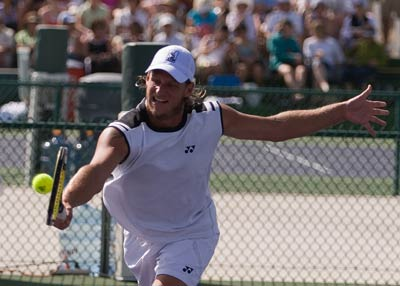
But to draw the conclusion that serving and volleying is still a consistently viable strategy in today’s game is a stretch. It is important to note that the Paris final was a very particular matchup: Djokovic played Daniil Medvedev, who likes to play points from the back of the court and returns his opponents’ aggressive shots without fail, resulting in them eventually making a frustrated error.
Many of Medvedev’s returns go down the middle of the court though, so opportune net play can result in some easy volleys that do not have to be hit on the stretch. “Opportune net play” probably sums up Djokovic’s tactics best: Djokovic has built a career playing similarly to the way Medvedev plays now, but at 34 years of age, endlessly sprinting and sliding from the baseline to keep points alive does not always work. So Djokovic learned to sneak into the net when necessary to cut a point short.
Djokovic’s net skills are far from revolutionary. Though a solid volleyer, Djokovic does not make eye-popping volleys like Roger Federer once did. But through coming to the net off good serves or approach shots, Djokovic can put himself in position to hit easy volleys. Serve-and-volley still is not a sustainable, winning strategy; it’s more of a supplemental tool that can be instrumental in getting out of jams.
Few players return serves from as far behind the baseline as Medvedev, making it easier to get angles on returns that can defeat a net rush. The tactic will probably work at times, but drawing a sweeping conclusion that serve-and-volley is not, and has never been, overshadowed by more modern winning techniques is probably buoyed by the temptation of nostalgia.
Despite O’Shannessy’s correct observation that serve-and-volley was pivotal in the recent Paris final, Djokovic’s execution of the strategy was risky and may not work as well in the future. Serve-and-volley may be a relic that can still occasionally be very useful, but it is a relic nonetheless.
How to Beat a Serve-and-Volley Player
By Krsto Arsenijevic Pete Sampras dominated the entire world of tennis through a dominant use of the serve-and-volley strategy. He consistently forced his opponents to make unforced errors through his excellence in this type of play. However, just as in other sports, tennis has gone through a change of play. No longer is the serve-and-volley approach recommended by tennis experts. This doesn’t mean it’s completely extinct though. Here, I’ll show you how to beat it when you see it!
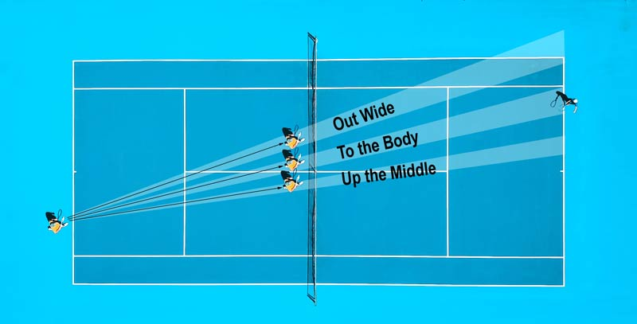
Basic Meaning of Serve-and-Volley
The goal of a serve-and-volley player isn’t complex. Simply put, they’re looking to get in a strong first serve that doesn’t allow a strong groundstroke in the return. Then, immediately after serving, they’ll rush the net and look to volley the ball back before it hits the ground. The two primary qualities needed are a big serve and quickness off the line. As for the returner, it puts them in immediate pressure.
Even though it’s tough to get a strong return on a big serve, you can’t hit a light shot that allows the server plenty of time to set up a winner.
The Fastest Miles Ever Run
Typically, serve-and-volley players are going to experience more success on hardcourt and grass court surfaces. It can be a daunting task for the opponent, but there are still plenty of ways to get by these serve-and-volley players with a victory.
Look for Your Chances
Cautious or Reckless?
There are two ways you can attack a serve-and-volley player: cautiously or recklessly. The cautious approach will lead to you just returning the first serve and not attempting any type of passing shots. Essentially, you’re not going to let your own shots lose the point, but rather make the opponent win the point. Conversely, a reckless strategy will attempt a high-degree of passing shots. This player will try to hit a big shot with every swing and go for a winner often.
There are glaring negatives with each approach. A cautious approach can result in an experienced player making quick work of you. Meanwhile, a reckless approach will lead to a high number of unforced errors.
A Little of Both
My best solution is to play a mixture of cautious and reckless. With a serve-and-volley player, you’re not going to have a chance for a point on every shot. This requires patience. If they make a strong serve, just get a return in and wait for the opportunity to hit a winner. Sometimes, you’ll even luck out and they’ll miss on an open shot. The key is to wait for your chances. Don’t give your opponent free points, make them earn it!
Play to Their Weaknesses
Unless you’re playing someone like Roger Federer or Novak Djokovic, chances are your opponent will have some holes in their game. As a player, it is your job to find these weaknesses and take advantage of them. Even if this requires you to alter your approach slightly, it is still likely going to be worth it. If you don’t have the opportunity to watch them in a previous match, check out how they play warming up and in the early stages of your match.
Do they struggle running back if a lob was hit over their head? Is their backhand or forehand stronger? Finding answers to these questions will help greatly as the match carries on.
Get the First Return In
As I mentioned earlier, a big serve is a critical part of the serve-and-volley approach. If they can’t force you to stay back behind the baseline, then the serve-and-volley strategy won’t be effective. Assuming they do have a strong serve, the only way to stay in the point is to get the first return over the net. While it would be ideal to get a decent return in, I recommend making sure you get the first return in for the early stages of the match.
This will not only make the games closer, but it will increase your own confidence. If they’re serving up aces on multiple serves each game, then chances are your confidence would start to drop and your own game would suffer. However, getting the returns early in the match will make you believe that you can start trying different and stronger returns as the game progresses.
Try to Keep Them Back
At the core of serve-and-volley player’s games is the idea that they want to get to the net. They want to put pressure on you. On the opposite end, you will want to keep them back closer to the baseline. Once they get to the net, it will be tougher to win the point. There are two methods for this. First, you can work on blocking the initial serve back so it goes deeper on your opponent’s court. This shot takes a lot of work due to the speed this serve may be coming in at.
However, it will keep them closer to the baseline. The second approach is for when the server is able to get to the net. In these situations, you can hit a lob. A lob goes over their head and forces them retreat on their court. If you’re able to successfully hit a few good lobs, it could also force them to hang back longer on some points due to tentativeness.
Hold Serve
Serve-and-volley players are going to be tough to break on most occasions. In these matches, you may only have a few break opportunities. With this being the case, it is vital to hold your own service games. By doing so, it will not only put you in a better position to win, but also apply more pressure to them on their service games. While learning how to effectively serve is a long concept in its own, the best advice I can give here is to be aware of them coming to the net when you’re serving.
After one or two shots, they’ll look to charge the net and put pressure on you. They will want to prevent any long rallies, so don’t be worried when they do come in.
Control Momentum
In nearly every sport, the word ‘momentum’ gets tossed around frequently. A team can be rolling along and then one play can change the entire outlook of the game. The same idea is present in tennis. Your opponent can be controlling the match, but one break could certainly change the tides. Be aware of this and try to grab the momentum early in the match. Players aren’t always completely ready when the game starts, so take advantage of this and come out ready to play.
This will not only ensure momentum is on your side, but can also set a tone for the rest of the match.
Practice!
Since serve-and-volley is a rarity in today’s game, it is tougher to be prepared for it when a player pulls it out. As a result, practice the concepts utilized by it during practice. For example, have a teammate serve and then rush the net against you even if they’re not a serve-and-volley player. They don’t have to possess a huge serve. Just practicing against the basic concepts will put you in a better mental mindset for moments when you’re faced with it in an actual match.
The Right Amount of Serve-and-Volley
In modern tennis, players approach the net at their own peril, especially behind their serve. Technological advances in both strings and rackets have made passing shots faster and more accurate, giving an added edge to the returner. It’s hard to imagine the game changing so that serve-and-volleying would once again become a dominant tactic. Yet pundits and commentators often suggest that players should approach the net more often, sometimes advocating for more frequent serve-and-volleying.
In a recent article at FiveThirtyEight, Amy Lundy brought some numbers to the discussion, pointing out that at the US Open this year, women have won 76% of their serve-and-volley points and men have won 66%. She also provides year-by-year numbers from the women’s Wimbledon draw showing that for more than a decade, the serve-and-volley success rate has hovered around the mid-sixties. Sounds good, right? Well… not so fast.
Through the quarter-finals in New York, men had won roughly 72% of their first-serve points. Most serve-and-volley attempts come on first serves, so a 66% success rate when charging the net doesn’t make for much of a recommendation. The women’s number of 76% is more encouraging, as the overall first-serve win rate in the women’s draw is about 64%. But as we’ll see, WTA players are usually much less successful.
Net game theory
When evaluating a tactic, we have to start by recognizing that players and coaches generally know what they’re doing. Sure, they make mistakes, and they can fall into suboptimal patterns. But it would be a big surprise to find that they’ve left hundreds of points on the table by ignoring a well-known option. If more frequent serve-and-volleying was such a slam dunk, wouldn’t players be doing so?
I dug into Match Charting Project data to get a better idea of how often players are using the serve-and-volley, how successful it has been. and, just as important, how successful they’ve been when they aren’t using it. The results are considerably more mixed than the serve-and-volley cheerleaders would have it. Let’s start with the women. In close to 2,000 charted matches from 2010 to the present, I found 429 player-matches with at least one serve-and-volley attempt.
After excluding aces, regardless of whether the server was intending to approach, those 429 players combined for 1,191 serve-and-volley attempts-95% of them on first serves-of which they won 747. Had those players not serve-and-volleyed on those 1,191 points and won at the same rate as their first- and second-serve baseline points in the same matches, they would have won 725 points. In other words, serve-and-volleying resulted in a winning percentage of 62.7%, and staying back was good for 60.9%.
Just to be clear, this is a direct comparison of success rates for the same players against the same opponents, controlling for the differences between first and second serves. A difference of nearly two percentage points is nothing to sneeze at, but it’s a far cry from the more than ten percent gap we’ve seen on the women’s side at the US Open this year. And it might not be enough of a benefit for many players to overcome their own discomfort or lack of familiarity with the tactic.
When we apply the same analysis to the men, the results are downright baffling. We have more data to work with here: In nearly 1,500 charted matches from 2010 to the present, more than half of the possible player-matches (1,631) tried at least one serve-and-volley. About four in five-once again excluding aces-were first serves. The tour-wide success rate was similar to what we’ve seen at the Open this year, at 66.8%.
Controlling for first and second serves, the same servers, at the same tournaments, facing the same opponents, won points at a 72.2% rate when they weren’t serve-and-volleying. That’s a five percentage point gap* that says men, on average, and serve-and-volleying too much. * Technical note: These overall rates simply tally all the serve-and-volley attempts and successes for all players. Thus, they may give too much weight to frequent netrushers.
I ran the same calculation in two other ways: giving equal weight to each player-match, and weighting each player-match by ln(a+1), where a is the number of serve-and-volley attempts. In both cases the gap shrunk a bit, to four percentage points, which doesn’t change the conclusion. I was shocked to see this result, and I’m not sure what to make of it.
It’s roughly the same for men who serve-and-volley frequently as for those who don’t, so it isn’t just an artifact of, say, the odd points that an Ivo Karlovic or Dustin Brown plays from baseline, or the low-leverage status of the occasional point when a baseliner decides to serve-and-volley.
Since I don’t have a good explanation for this, I’m going to settle for a much weaker claim that I can make with more confidence: The evidence doesn’t suggest that men, in general, should serve-and-volley more. Data from the women’s game is more encouraging for those who would like to see more serve-and-volleying, but it is still rather modest. Certainly, the 76% success rate in Flushing this year is a misleading indicator of what WTA players can expect to reap from the tactic on a regular basis.
It’s possible that some women should come in behind their serves more often. But the overall evidence from a couple thousand matches suggests sticking to the baseline is just as good of a bet-if not better.
Serve-and-Volley… Is it worth it?
As we discussed in class, tennis is one apt example where we can observe game theory. Even though one person technically makes a move, or hits the ball first, it’s a matter of seconds so the returner already has to start to anticipate where the ball will go. It’s hard for viewers unfamiliar with the game to notice this on baseline rallies, where both players are hitting the ball from the back of the court.
From any angle on the court, there are certain high percentage shots that a player can hit and is most likely to make. Thus, the returner can position him or herself in a strategic position as to maximize their chance of hitting the ball back. For example, in the picture below, the dotted lines depict the range of court in which player 2 can return the ball made.
Thus, after player 1 hits the ball, he or she are recovering to get back into position, so as to maximize their payoff and ability to stay in the point. Generally, if one were to make two categories (one for hitting inside the blue lines and one for hitting outside the blue lines), one would find that this is the dominant strategy, as the chances of hitting a shot and winning the point by hitting outside the blue dotted lines are very low. Thus over the course of a match, the payoff will be less.
However, an easier way to understand the application of game theory would be through serve-and-volleying. A once widely used strategy, serve-and-volleying refers to when a server serves the ball, normally fast or at a hard angle, and comes to the net to volley, or return the ball without it bouncing. The advantage of this strategy is that it catches your opponent off guard and shortens the time between the returner’s first shot and second shot they have to hit.
At the same time, the tactic relies on catching your opponent off guard. Unless the serve is hit really well*, the returner has a wide angle to work with because all he or she has to do is hit it out of the reach of the server or lob the ball so the server can’t get to it. This form of play was popular in the olden days, in the time of John McEnroe, Pete Sampras, Andre Agassi, Martina Navratilova, etc. because of the wooden rackets and playing style at the time.
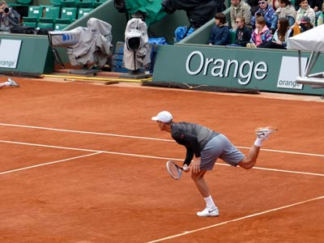
However, as tennis ushered into the new era, players began to develop a better baseline game and switched to heavier steel and aluminum rackets, which increased the ability of a player to hit a groundstroke or return better. However, some players still prefer this tactic. Normally, large players who don’t have the stamina or the baseline game to go toe-to-toe with their opponents employ this tactic. Still, research shows it’s becoming more of a hit or miss game.
One player, Mischa Zverev of Germany, described it as “flipping a coin 200 times a day and then [hoping] you win the majority of those coin tosses” (Reuters). He’s absolutely right, as at the end of the day, this is nothing but game theory. There is no dominant strategy or Nash equilibrium. If Zverev were to serve and volley, a few points in the opponent would just start to anticipate the approach and counter it with either an angle shot or a lob.
Over time, the likelihood of Zverev winning a point with this strategy would be slim to none. Thus, he not only has to decide whether to come in or not but where to serve as well. Thus, the possibilities are endless, making it a mixed strategy game, where the server has switch his strategy up on any given point.
To hear more from Mischa Zverev about serve-and-volleying, click this https://www.youtube.com/watch?v=NrUy_1SshO4 *Note: For the sake of argument, this analysis assumes that the serve hit is viable enough to employ this approach. In a real tennis match, there are numerous other factors that limit or enhance this strategy such as the player’s service strength, the court surface, weather conditions, the opponent’s court positioning, etc.
How To Serve and Volley Like The Pros
Serve and Volley Tips
How would you like to serve and volley effortlessly like the pros? Are you making any of my top four most common serve and volley mistakes? In this tennis blog, I will share with you tennis movement and split step tips to improve your serve and volley game. Moreover, I will give you a drill you can do by yourself to correct them.
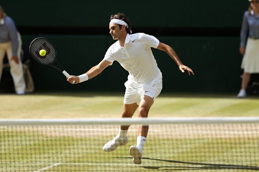
Common Serve and Volley Mistakes
Before I discuss how to practice your serve and volley, I want to go over what not to practice. There are four primary mistakes I see people make while serving and volleying. The first two focus on the server’s approach to the net. First mistake, approach the net with short strides. Instead of taking several small steps, take one to three big strides. You will see more success with bigger strides. Second mistake, stand up tall after the serve.
If you stay low after serving, you can take fewer, but larger steps to achieve a better approach. The third mistake is splitting at the service line. There is a common misconception that when you serve and volley, the split step must be at the service line. In reality, it is okay for your split step to be in no man’s land, as long as you move forward to hit your volley in front of the service line. The fourth mistake is splitting and ceasing all forward momentum.
Try not to stop all of your forward movement with your split step. Think of your split step as a “split and move” instead of split and stop. You want your approach to be a continuous flow.
How To Split Step and Move
When it comes to serving and volleying, split step footwork is a hot topic. Think about your own split step. Is your split step narrow or wide? Do your feet touch the ground at the same time or are they staggered? A wide split step provides a good base and balance for your volley. Touching both feet to the ground evenly at the same time during your split step stops your forward momentum completely.
In order to move forward after a volley, you have to restart that forward momentum, and that takes more time. Instead of a split step, think split and move. Both feet should not hit the ground at the same time to keep the movement continuous. If I had to choose between a player that splits and stops and one that does not split, I will take the person that moves. The reason being, the moving player has momentum going towards the ball.
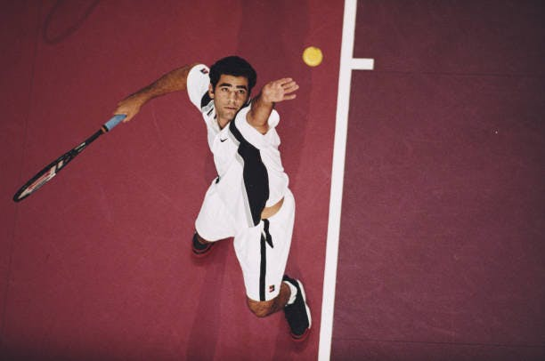
Sure, that creates a reaction problem, but I would take my chances with the player moving continuously. The player that splits and stops will have to completely start their forward momentum again.
Serve and Volley Tennis Movement
During a serve and volley tennis movement, there are three primary times to focus on a continuous motion. The split step, volley follow through, and volley recovery should all focus on continuous motion. Let’s break down each of these motions during a serve and volley. First, as we discussed before, try not to completely stop during your split step. Stagger your feet, so they do not touch the ground at the same time. Continually flow through the split step motion.
Second, when you follow through after contact for a volley, hold the finishing position. Do not immediately reset the racquet, but hold the finish position as you move to your recovery position. Last, make sure you recover after you hit your volley. Try not to stop your feet immediately after hitting a volley because you will not be in a good position to play the next ball. Recover slightly down the line from where you hit your volley.
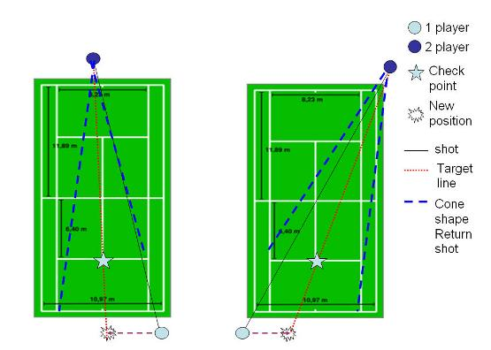
The Problem with Serve and Volley Practice
The challenge with practicing the serve and volley is, there is really only one way to practice: play matches. If you are a competitor like me, it is difficult to practice serving and volleying in a match if it is not a skill that you are comfortable with. The only way to practice at home is to have a partner willing to feed you balls. It is much harder for those of you that do not have someone to feed you balls. It is also difficult to practice when you compete because of little repetition.
Repetition can also be particularly difficult if the return does not come back. Over the course of a set, you may only hit five volleys when you serve and volley. This simply is not enough repetition to make true improvements.
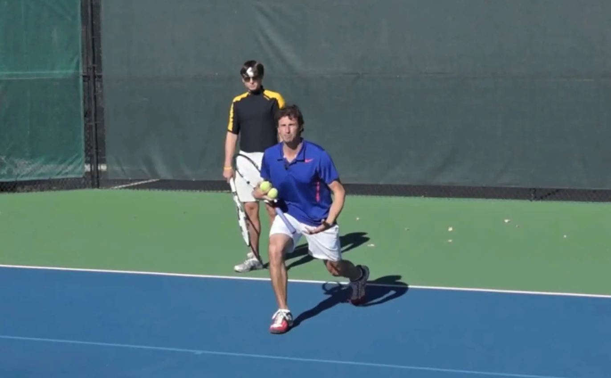
The Solution: How to Practice Serve and Volley
You may be thinking, with no good way to practice a serve and volley, how am I supposed to improve? I recommend using the shadow stroke method to improve your tennis movement. Learn the tennis movements and concepts first. Most tennis players are not going to spend time on their tennis movement. If you are committed to learning to serve and volley, this is a great place to start. Here are three steps to practice your serve and volley tennis movement. No partner or ball needed!
First, perform a shadow serve stroke; mimic a service motion without hitting a ball. Second, recover forward and split and move. Stay low, take one to three steps forward, and stagger your feet to split and move. Third, move forward to hit a shadow volley, step forward toward the invisible ball, and mimic hitting a volley. Fourth, recover after the shadow volley. Hold your volley finish position while continuously moving your feet to a proper volley recovery position.
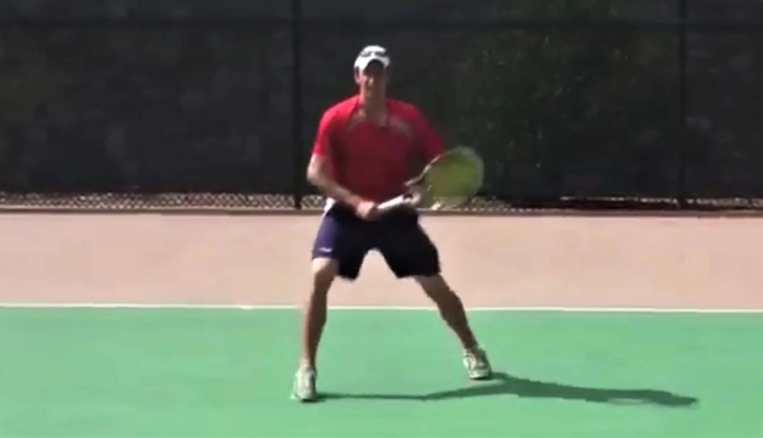
Conclusion
In conclusion, know that a good serve and volley is all about developing rhythm, timing, and flow. Get a good rhythm down and move the right way. Avoid the little choppy steps, do not stop on your split step, and keep moving through it. Hit a volley, and keep moving after the volley to your recovery spot. Shadow stroking the serve and volley can help you understand the rhythm of moving forward on a serve and volley. Practice it on your own time without a ball.
This is not easy if you have not practiced tennis movement skills before, but these tips can get you to the next level for your serve and volley game. By Jeff Salzenstein, Founder Tennis Evolution Jeff is a former top 100 ATP player and USTA high performance coach committed to helping players and coaches all over the world improve. serveandvolleytennis.com
A Strategy Primer on How to Serve and Volley Effectively in Tennis
by Chad Walner | Are you looking to add the serve and volley game to your tennis arsenal? Or maybe you currently serve and volley but just want some tips to improve that part of your game. This post is all about how to effectively serve and volley in singles. Some of the information here will work well for doubles, but we’re going to focus primarily on singles. In order to serve and volley effectively, it’s essential to have a serve with spin and pace that can be placed accurately.
It also requires solid volley technique and the ability to hit overheads. Finally, it requires athleticism, good hand-eye coordination and the right strategy. We talk a lot about the serve and volley game on this blog, hence the name of it. I am a big proponent of the serve and volley style and I use it in singles and doubles matches consistently. It’s very effective against players slightly lower in level and a good way to change things up when facing players your level and above.
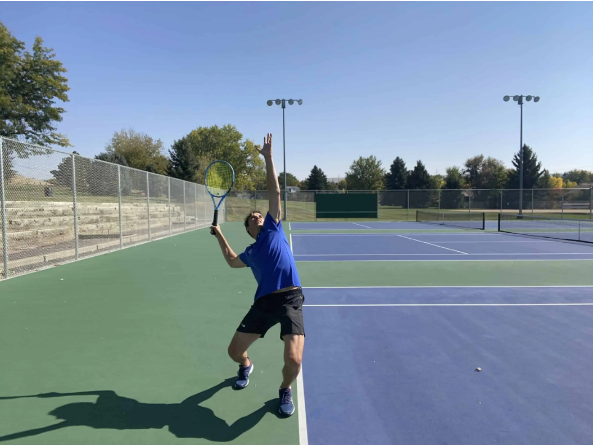
Like most players, I started off as a baseliner who added the serve and volley game later on. While pro tennis has proved (at least for now) that serve and volley is not as effective as the baseline game, it’s still very effective at the club level. I believe you should be using the serve and volley in doubles, and if you have the ability, it can work wonders for your singles game as well. Keep in mind that it takes years to build up a good serve and volley game, so give it some time.
It All Starts With A Good Serve
Let’s face it. You absolutely need a good serve with spin, speed and placement to use the serve and volley as a weapon. If you don’t have a good serve, you’ll be a sitting duck at the net - even at the club level. A poor serve with little pace and spin means players are going to pass you, hit to your feet and lob you. You’ll eventually get frustrated, abandon the serve and volley game, and retreat to the comfortable confines of the baseline.
If your serve is weak, you’ll need to improve it if you want to consider adding the serve and volley game to your tennis arsenal. How much you need to improve your serve is really for you to judge. I’ve seen players with 70 mph first serves come in and volley effectively because they’re playing at a 3.0-3.5 level. If you play at that level, you can get away with a subpar serve. At the 4.0 level and above, probably not.
If you wonder about the level of your serve, here is a simple way to tell if you can use it to serve and volley. Try to serve and volley on every first serve for a whole set against someone at your level. If you get passed every other shot and lose most of the points you come in, then you need work on your serve. If you want to take your serve to the next level, we have articles like this (basic), this (2nd serve) and this (serve toss), and also videos showing you how to serve.
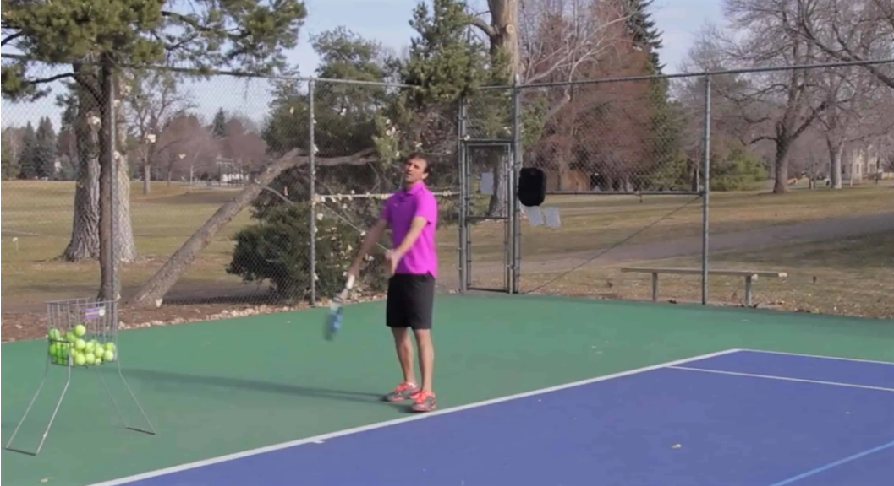
Take a look at our youtube channel. This post is intended to provide you with strategies to serve and volley effectively. It assumes you have the ability to hit good serves and decent volleys at your level of play. Assuming this is the case, we can now talk strategy. Here is a breakdown of what this guide will offer: Choosing the type of serve. Choosing a target for your serve. How to approach the net. How to meet the return at the net. Choosing the type of volley to hit.
Choosing a target for our first volley. Subsequent volleys. Considerations when serving to the ad side. Chip and Charge: a strategy for the receiver.
Mix Up Your Serves
For singles, it’s best to start your serve about 2-4 feet from the mid-line. If we set up further away, we give up too much space on the court. From this position we have several options to choose from: It’s very effective to mix up your serve speed and spin. You should be hitting three types of serve throughout the whole match: Flat serve - This is your fastest serve which has little spin. Kick serve - Your topspin serve, which “kicks” or bounces high off the court.
Slice serve - This serve has side spin and usually stays low and spins in the opposite direction of your hitting arm. There is a difference between a kick serve and a slice serve. A kick serve has topspin, which makes the ball “kick” or bounce high in the air after hitting the ground. This serve can be very difficult to return, especially to the backhand of your opponent. A slice serve has side spin and usually stays low and spins to the left (if you’re a righty) and vice-versa if you’re a lefty.
This serve can also be very effective because it can slide away from the returner - or even directly into them. When I was a kid, I used to love playing and watching baseball. The best pitchers of my day (like Roger Clemens and Greg Maddux) always varied their speeds and spins, which made them so tough to figure out. I suggest you do the same when you serve. Here are the benefits of doing so: Your opponent will always be left guessing which serve (flat, kick, slice) you will be serving.
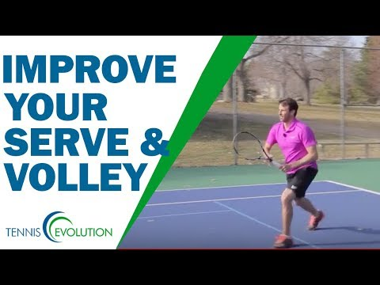
It will disrupt the return game of your opponent. A kick serve and flat serve can vary in speed by as much as 30-40 mph. These extremes make it difficult for your opponent to time your serve. After hitting all three serve types, you can assess which one your opponent has the most trouble with and key in on it. For example, maybe the flat serve into the body on the deuce court is problematic for your opponent while the kick serve to the backhand gives them trouble on the ad side.
You can determine this as the match progresses. This is a good way to figure out players you have never previously faced.
The Three Different Targets To Serve To On The Deuce Side
When serving to the deuce side, you should be aiming for one of three specific targets or zones on the baseline. Take a look at the diagram here for a visual. Imagine the baseline of the deuce side is divided into three equal widths. The three different targets are out wide, into the body, and up the middle. When using the serve and volley, you should know the answer to two questions before you toss the ball. First, will the serve be flat, kick or slice? Second, which zone will you aim for?
You should definitely be mixing up the serves and zones. Take note during the match which zone gives your opponent the most difficulty. You can then hit to that zone during important points, like break and ad points. You would also want to hit a majority of your serves to that zone, perhaps 50-60% with the other 40-50% split between the other two zones. Now let’s talk specifically about serving to each zone.
For the sake of brevity, the following information assumes a righty is serving to a righty. Obviously, this information will change if a lefty is involved. Serving Out Wide - This can be a very rewarding serve. If you can hit a wide enough angle, you can secure an ace. At the least, you can force your opponent to return way off the court. This usually results in a weak return that you can put away at the net.
It’s best to volley the return to the opposite side of the court (ad side) when your opponent is so wide. Anyone of the three serves, flat, kick or slice, will work when serving out wide. The danger in serving out wide is that if you don’t hit a good angle, you are serving right into your opponent’s strength: their forehand. Your opponent can then rip a return in which they can pass you down-the-line or cross court. So make sure to aim near the line when going out wide.
Into The Body - This is the safest and highest percentage serve but your chance of securing an ace is almost zero. You’ll want to hit a fast, flat serve directly at your opponent. If done right, your opponent will not be able to return the serve to your side of the court. Or, at the least, you’ll get a weak return that can be put away easily. If you try to hit a kick or slice serve to this zone, your opponent may be able to move out of the way and blast a return.
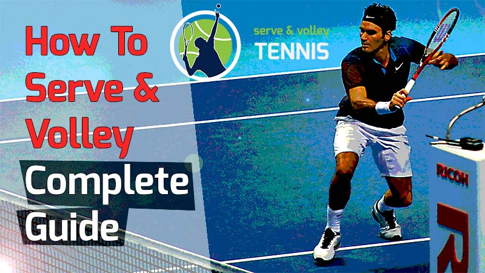
Likewise, if your serve does not have enough pace, your opponent can do the same. So make sure you have some zing on your serve when going into the body. Up The Middle - You’ll probably use your fast, flat serve here most of the time. A kick serve can also work very well (if it has enough pace). And a slice serve can be effective up the middle too, as it would slide into the body of your opponent.
What I like about going up the middle on a righty is that the ball is directed into their backhand, which for 90% of club players is their weaker wing. You can definitely hit an ace on a good up the middle serve. Or, if you can kick the ball up high to the backhand, you’ll most likely receive back a weak return. Personally, I feel targeting a serve up the middle is the most difficult spot to hit for a right-handed server at the club level on the deuce side.
Still, you should be targeting this area.
What Happens After The Serve?
You’ve chosen one of the three different serve types (flat, kick or slice) and selected a zone (out wide, into the body, out wide). You then step up to the line and hit a great serve. Now what? As most of you already know if you play tennis, you’re going to run forward toward the net. It’s called “following the ball”. When done right, the serve and volley is one blended motion. It consists of the serve, landing on the left foot after the ball is struck and running in.
This part of the serve and volley should be seamless and quick. Your footwork here is essential. Without good footwork, you’ll never get close enough to the service line to stick your first volley. I therefore want to mention a couple of important points about it before we move on. Almost all right-handed players will want to land on their left foot after serving. This holds true for any and all types of serve by righties.
By landing on your left foot, you’ll thrust your weight forward which makes for a bigger serve. You’re also creating forward momentum that will propel you towards the net. Take a look at any right-handed player on the ATP or WTA tour. You’ll see all of them land on their left foot when serving. Once you land on your left foot, your upper body should be slightly over your left leg, which will cause you to “fall” forward.
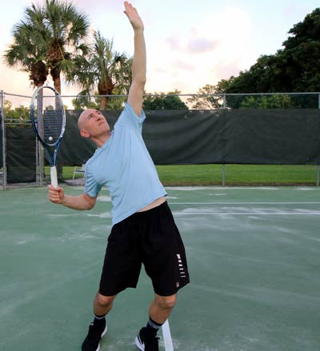
You want to use this forward movement to take your first step with your right leg. You then run toward the net as quickly as possible. An important key here is to stay slightly lower on your run than you normally would. This means arching your back slightly forward, maybe 10 degrees. By doing so, you get to net quicker and split-step easier.
Follow The Path Of The Ball
We know we will come to net after the serve. But what’s the best path to come to the net? When the serve is performed correctly, our momentum takes us forward into the court. So where do we go from here? The rule of thumb for almost all serve and volley points is to follow the path of the ball. The wider the serve on the deuce side, the sharper our angle of approach. See the diagrams I included above for a good visual description of how to approach each zone.
If we are going into the body, then we run at a less sharp angle. Since the serve is being directed into the body, our opponent will not be able to hit down the line as easily as when we go out wide. We can, therefore, approach further from the line, covering more of the middle of the court. But what if we serve up the middle? Again, we follow the path of the ball. Our line of approach will be at a very slight angle, running almost up the middle of the court.
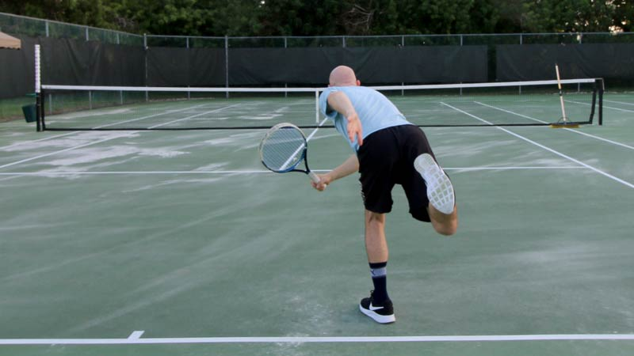
If you hit a well-struck serve to your opponent’s backhand (which will happen if you hit this zone), you should receive a weak return, ripe for a put-away. Be careful though. If your opponent has time they can pass you in either direction. It’s much more likely they pass you by hitting to your ad court (left side of your court) than to the deuce side (to the right of you). This is because hitting a good, inside-out backhand on a return is difficult - plus you are approaching from the deuce side.
Decisions At The Net
1) The Hop And Split Step When you see your opponent go into their backswing for the return, you’ll want to stop and split step. The stop is not abrupt though. That would be inefficient and will never work in a real-world scenario. Instead, it involves a hop. At first, it may seem challenging to do, but after some practice, it becomes second nature. As your opponent goes into their backswing, you’ll literally hop off one leg (I like to hop off my left) and “jump” into the split step.
I see so many club players miss doing the hop, which causes them to split step a little too far from the net. Just a foot or two difference from the net can mean hitting a volley off the ground (half volley), which is not preferable, or catching it in the air (preferable). The hop allows you to cover more distance and spring forward out of the split step easier. What exactly is the split step?
The split step occurs when you come to a full stop with both feet directly under you, slightly wider than shoulder width. The split step is used by professional players everywhere on the court, but when close to the net, you’ll want to adopt a wider than normal stance and get slightly lower. This allows you to push off in any direction quicker. Key Point: When approaching the net after the serve, keep the racquet in front of you and maintain the continental grip (like gripping a hammer).
I like to keep the racquet in a neutral position about chest high. A neutral position means it will take the same amount of time to hit a forehand volley as it does a backhand volley. I see way too many players run with the racquet on one side of their body, which makes it nearly impossible to volley a high-velocity return on the other side. You should also keep the racquet head slightly higher than the hands.
This will set you up to volley in the correct position. 2) The Flowing Volley In tennis, there are very few black and white protocols, such as always do this and never do that. Some players ask me where they should follow through on their forehands. The answer is that it depends and varies on the situation. The same is true of the split step. Most of the time you’ll split step in the manner I described above. But sometimes you’ll want to keep running and not hop or split step.
This is called the flowing volley and it requires more hand-eye coordination and timing. We can define the flowing volley as hitting a volley while still moving forward. You’ll want to incorporate the flowing volley in your game, even though it is more of an advanced way to approach the net. Here’s how to do it. Simply continue to run forward but slow down some to hit the volley. Only after the ball is struck will you stop.
It’s important you start setting up the racket before you get to the ball. When is the best time to use the flowing volley? I’ll outline them below. The return is hit so slow that you don’t need to split step. Instead, you continue to run towards the ball and use a drive volley to put it away. In some instances, you can hit a swinging volley. You can also employ a drop volley. If you want to know about the seven volley types, you can read an entire article we wrote on the subject here.
If you see the ball starting to drop low, you may want to continue running to take it out of the air. This is usually the case on soft-to-medium hit returns. On hard hit returns to your far right or left, it’s not advisable to use the flowing volley. If you don’t have enough time to move up to the service line, you may want to sacrifice the split step to get closer and better position. This is a gamble though. If the return is hard hit or is near the lines, you’re in trouble.
But if the return is medium pace, or even fast pace but directly to you, you can still recover and hit back a defensive or decent volley. On a slow-paced return, you should have no problem adjusting.
What To Do On The First Volley
You serve, hit your zone, and your opponent returns at a medium pace right to your direction. Whether you split step or not, you have a great chance to hit a good first volley. So which type of volley do you hit? And where do you place the volley? We will define four targets for the first volley. The target you choose is dependent on where your opponent and yourself are on the court. Additionally, the speed and height of the return will determine the volley response.
One more quick word on the first volley. While our goal is to always hit an unreturnable first volley and win the point outright, we need to be prepared to hit a second volley. It might be better to think about your first volley as a shot that sets up the second volley. This will take some pressure off your first volley. Remember, whether it takes one volley or five volleys, if you win the point, then goal accomplished.
Which Volley Do I Hit?
I wrote a long and detailed article with photos showing the seven different volley types. I won’t repeat the information again here, but I will touch on which volleys to use and when. If you don’t know the seven different volley types, I highly recommend reading that post. It will be very helpful to your volley game. 1. Drive Volley - Use this volley on slow-hit shots. It’s vital you use the drive volley to decisively put away slow.
If not, the point is likely to continue and the chances of you being passed increase. You can always tell if you’re playing against an expert volley player by how easily or not he puts away sitters. The greats do it 9 out of 10 times and often the returner will have no chance to even get a racket on the ball. 2. Swinging Volley - I like to use the swinging volley when I get a looping shot with little pace.
Usually, the shot will be too low to hit an overhead smash, so I set up for a swinging forehand volley. The swinging volley should easily end the point and has a bit more power than the drive volley. I don’t recommend hitting a backhand swinging volley to beginner and intermediate players, but if you can manage it, then go for it. 3. Punch Volley - Hit this volley when you receive a medium-paced return. All we’re doing is blocking with a little “punch” or forward movement of our racket.
Optionally, you can step forward with the opposite leg when volleying to give the ball some pace. 4. Block Volley - Use this volley when your opponent hits a screaming groundstroke in your direction. With this volley, you’re just blocking or deflecting the ball to your opponent’s side of the court. Make sure to hold the racket with a loose grip and allow it to have some give when impact is made (how much will depend on how far you’re volleying from the net).
I see many club players make the mistake of trying to hit a punch volley on high-paced returns. Sometimes the less you do, the more you accomplish. The same is true for the volley - less movement and take back is often better. 5. Half Volley - If you serve and volley a lot, you’re going to be forced into half volleys on many occasions. A half volley is when the ball hits the ground before you volley it.
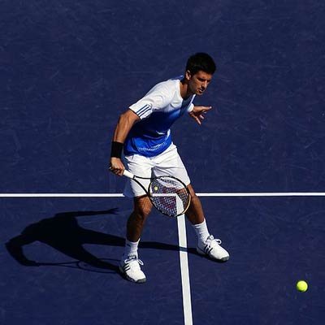
Since half volleys are generally defensive shots (though they can be turned into offense as well), your first goal is to get the shot back and over the net. Most of the time you’ll be volleying up and directly off the rise. If you feel like you have a good chance of returning the half volley, your best bet is to just place it well. Don’t worry about hitting it hard. Often a dropper right at the net can win you the point. 6.
Drop Volley - This brings us to the drop volley, which I mentioned before. It is simply a volley that you place close to the net. This volley works best when your opponent is behind the baseline, not fleet of foot, tired or flat-footed. However, even the fastest players can’t get a racket on a well-placed drop volley. They are subtle can be very effective. 7. Overhead Smash - If you serve and volley, you’re going to get lobbed.
You have to be willing to hit overheads and work on that part of your game. When an overhead is hit, turn to your side and get your racket into the “trophy” position. Use proper footwork to back up and when you set, place your weight on your back foot. When hitting the overhead, try to transfer weight onto the front foot. Keep in mind you need to have some racket speed to hit a decisive winner, though placement (with a slower struck shot) can be your best friend on an overhead as well.
Where Do I Place My Volley?
Let’s define four locations, as each is effective in different circumstances: Location # 1: Behind - The first location is behind your opponent, out wide. From your perspective, you’re volleying to the left of your opponent. Location # 2: At - The second location is directly at your opponent. This sounds like a bad idea, but it can work great if you hit a fast-paced volley to an opponent who has returned from out wide. Location # 3: Ad - The third location is to the open ad court.
Location # 4: Drop - The fourth location is a drop volley close to the net.
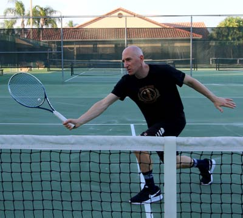
Regrouping After You Volley
Always return to the ready position after hitting a volley or an overhead. It’s important you get right back into the ready position as soon as possible. Not doing so is the most common cause of missing the net shot. After getting back to the ready position remain alert. Stay on your toes and look like you are ready to move anywhere to hit the ball. This alone will intimidate your opponent and make him miss more often. I find the opposite to be true.
If you stand straight up and flat-footed, your opponent will have a much easier time passing you. Never assume the point is over until it’s clearly over. I see net players often caught by surprise when the opponent hits yet another groundstroke or lob, forcing them to hit a ball when not ready. Play the point until the end. Try to anticipate where your opponent is going to hit the ball by watching how he sets up. Often you can tell if he is going to hit a hard groundstroke or lob in this way.
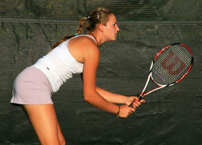
Sometimes you can anticipate direction as well. Learn to have a good eye. This means to be aware when a return might be going out or long. If it’s going out, just let the ball go without touching it. If you are not certain, I recommend you hit it. You will soon develop a feel for where the ball is going.
A Brief Recap
If you’ve read this far, congratulations. You’ve learned a lot of information on the serve and volley game. No doubt, these tips will benefit you for the rest of your playing days. Let’s sum up what we learned and continue on. We saw that a good serve is essential if we want to use the serve and volley game. We have three different serves to choose from. We have three different zones we can serve to.
Once the serve is made and we run in, we can either split step or continue running and use the flowing volley. The path we take into the net is determined by where we serve the ball. If our first volley is hit at us, we can choose four different locations to place the ball. The type of return we receive (varying height, pace and spin) will determine which volley to use from one of the seven different volley types. I think that’s a pretty good summary of how to look at the serve and volley.
There are still a few more points of info to discuss. I’ll try to word them as briefly as possible. Let’s take a look at our specific options for the volley in each case: if you serve out wide, into the body or up the middle.
Your Options When Serving Out Wide
If you serve out wide and receive a return to the middle of the court, you have all four options for where to place the first volley. Location # 1: Behind - This is a volley behind your opponent, which is out wide again. Keep in mind we’re taking a bit of a chance here by volleying near our opponent. How is this location effective? If your opponent is off the court he’ll immediately try to recover to the middle of the court after making his return.
You’ll know he’ll do this because his entire court is exposed. You then volley behind him so that your shot is in the opposite direction of his momentum. This makes it very difficult for him to hit back. After you volley here, slide over to your left a bit to cover anything down the line - just in case your opponent hits a forehand. **Helpful hint: This location works especially well against fast players.
Slower players or lazy players tend to linger outside the court, making it difficult to hit behind them. In that case, simply hit to the open court to easily win the point. Location # 2: At - Firing a volley directly at my opponent can work because I know my opponent will likely move to his left (my right) after returning out wide. My goal on this volley is to hit a fast-paced shot right near his feet.
As the opponent will be on the run, he won’t be able to set up in time to hit a good passing shot. This also catches a lot of players off-guard because they are not expecting a volley right back to them. Location # 3: Ad - Volleying to the open ad court makes sense if your opponent is off the court on the deuce side, as he may be after a serve out wide. If you hit a low, hard volley, you should win the point without your opponent getting a racket on the ball.
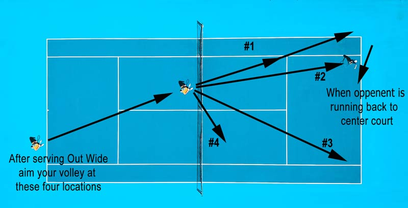
But if hit too soft, then a fast opponent may return your volley. Remember, the opponent is anticipating we will volley to the ad side. If he has the chance to recover, he’ll be sprinting in that direction. Still, it’s the most logical place to hit and quite effective. I use this location when my opponent is way off court or when I want to fatigue him. Location # 4: Drop - I would suggest dropping the volley over the net to your right, the furthest location from your opponent.
But really, this is such an effective technique it will work anywhere close to the net. The key here is to have soft hands and make sure you have a lot of “give” on your racket. If you hold a firm grip, hit the ball too high or too deep, your opponent can run in and easily put the ball away. I use the drop volley around 10-20% of the time when playing singles. In doubles, it’s a little tougher because there is another person at the net.
Your Options When Serving To The Body
When you serve to the body and receive a return, most likely your opponent will remain still. As a possibility, he may move slightly to his left (to the center of the court). We will need to see exactly where he is before hitting our first volley. Hitting out wide to our opponent’s forehand is not preferable here, so it limits us to three locations. Location # 2: At - We can direct the ball right back at our opponent. This is the safest volley to hit for us, because we’re hitting cross court.
But our opponent has a great chance to hit back the ball unless we completely jam them. I would recommend hitting to the two other locations first. Location # 3: Ad - The third location is to the open court on the ad side, preferably close to the sideline. Since our opponent is not off the court, he might be able to get to this volley if not fast-paced or angled off enough. So be ready for a second volley.
Remember, your mentality as a beginner or intermediate player should be that the first volley sets up the second volley for a put-away. Location # 4: Drop - The fourth location is close to the net using a drop volley. The drop volley can be effective anywhere your opponent is, as long as he is returning near the baseline. I should mention that you can try angling off a volley to your opponent’s deuce side. However, beginner and intermediate players might find that a challenge.
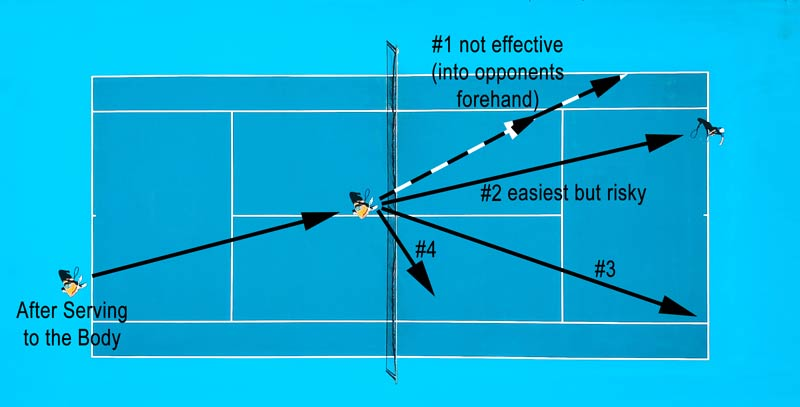
You’ll also be hitting dangerously close to the sideline. Your best chance to angle off the volley to this area is by using a drive or hard punch volley. Anything less and you are hitting into your opponent’s forehand.
Your Options When Serving Up The Middle
A good serve up the middle will stretch your opponent out and put him near the middle of the court. I would not advise you go straight back to him though. From the center of the court there are too many options. He can pass you on either side, lob you or even hit a dipping shot at your feet. Most of the time a good serve up the middle will produce an ace or a weak return, ripe for a put-away volley.
If you do receive back a medium or fast-paced return, use one of these three locations: Location # 1: Behind - Out wide to the deuce side. This will make the opponent scramble to his right to hit a forehand. The benefit is you drag him away from the center of the court to set up the next volley, which will be to the far ad court. The danger here is in not hitting a good enough volley. If not, then you are hitting right into your opponent’s strength, which is his forehand.
It’s important that you move a few steps to your left when hitting here so you can cover the down-the-line shot. Location # 3: Ad - To the far ad court. This will put the volley on your opponent’s backhand side. He’ll have to scramble to hit a backhand pass, which is much tougher than a forehand. This is a safer bet for us and better than hitting to the deuce side (location # 1). After hitting this volley, scoot to your right a few steps.
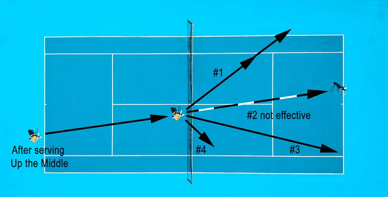
You’ll want to cover any possible down-the-line backhands (which it would come down the right side of your court). Location # 4: Drop - Near the net. Yup, another drop volley. They’re always effective and can really dishearten the opposition. I used to play against a great net player named Seth who had tremendous drop volleys and overheads but not much in between. He could “deaden” almost any groundstroke and place the ball within two feet of the net, where it would die quickly.
There’s just no chance to return a volley like that!
What Happens After The First Volley?
You’ll either end the point with the first volley or not. If the point continues, then hopefully you’ve done enough with the first volley to set up a put away second volley. If not, then you’re in a dogfight, as your opponent is likely scrambling around the court, desperately trying to pass or lob you. Remember to keep getting back into the ready position after each volley. Keep cool and try to anticipate where your opponent is hitting. It’s also vital that you move forward after each volley.
If your first volley is struck at the service line, you should be able to at least take several steps in so that you’re closer to the net for the second volley. The closer you are to net, the more angles you can cut off from your opponent. I should point out that leaving a couple of feet of space from you and the net is advisable. If you play with your nose over the net, you can be very easily lobbed. Not only that, you stand a good chance of hitting the net with your racket or body.
Doing so will automatically lose you to the point. Here is one more important take away when being in a dogfight at the net. Don’t back off the net and attempt to run back to the baseline, please. There’s no time for that, and besides, that behavior is contrary to what we are looking to do here. We want to keep pressure on our opponent and end the point quickly and decisively with a volley or overhead. If it takes 10 volleys to win the point, then so be it.
Keep closing in and angling off the volleys. The only time you should ever back up is when being lobbed.
What About Serving To The Ad Side?
You can use the same strategy of choosing which serve to use and to what location. After serving, you still follow the ball in on the same trajectories, just the reverse of the deuce side. If going out wide, you’ll need to run on the sharpest angle. If to the body, then less sharp. And if going up the middle, then you’ll run nearly down the middle of the court, with not much angle. I want to touch on each location for the ad side before ending this post.
I’ll mention the most important things you need to know about serving to each zone. Again, this all assumes a righty is serving to a righty. Serving Out Wide - This is a great place to serve since the ball is being directed at your opponent’s backhand. Fast, flat serves and kick serves work great in this zone. Most likely you’ll receive back a weak return or floater. If so, don’t even worry about going behind them. Simply hit the return to the far deuce side of the court, far from your opponent.
You can also hit a drop volley on the deuce side. A kick serve to this zone probably won’t get you an ace, but it will most often produce a weak return. A kick serve out wide is one of the safest plays you can make when attempting to serve and volley. Serving Into The Body - Any type of serve (fast, slice or kick) will work in this zone. Most players prefer hitting a fast serve to the body though. Most returns that are directed into the body are weak, making a put away easy.
If you receive back a medium or fast-paced return, you may have the option of hitting back to the ad side if your opponent moves to the middle of the court quickly. But most of the time I recommend volleying to the far deuce side or just hitting a drop volley. Your worst place to volley back to is the middle of the court (right into your opponent’s forehand), so try not to at all costs. Serving Up The Middle - This zone can produce a lot of aces.
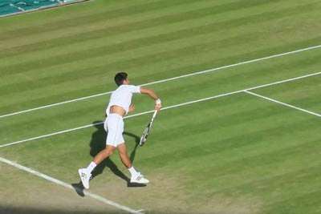
I believe it’s easier to ace someone up the middle than out wide, especially for club players. But, with that said, remember, you are serving right into your opponent’s forehand. For that reason, I do not recommend many up the middle serves on the ad side, unless you serve with a big kick, with a lot of velocity or have excellent placement. Let’s say you receive back a medium-to-fast-paced return. My ultimate play is to hit a drop volley on either the deuce or ad side.
If you can’t do that, here are three other options. Hit a fast-paced volley out wide to the deuce side. Or, do the same to the ad side. One additional option is to hit a fast-paced volley directly at your opponent. Try to edge it slightly more to the backhand side if you can. You do this in the hopes of jamming your opponent and making him miss or send back a weak return.
While this is the easiest volley to hit, you expose yourself in the middle of the net if your opponent can set up for a blast return.
Chip And Charge
Before we wrap up, I’d like to say a few things about your return game. You obviously know the serve and volley can only be employed when you’re serving. But how can we be aggressive at the net while returning serve? The answer is the chip and charge. We can do this off the serve or on a groundstroke. The chip is the slice, which can be done on either the forehand or backhand side. By slicing, preferably to the sidelines, we keep the ball low and make it difficult to hit.
We then charge the net, following the path of the ball. This will drive our opponent’s crazy, as they at least thought we’d stay back when returning. You can also come in on most well-hit or deep groundstrokes. I like to come in on a groundstroke to my opponent’s backhand. Usually, he’ll be on the run when I start coming in. Another play is to hit a looping, topspin shot to your opponent’s backhand and just come in immediately behind it.
Despite returning, there are plenty of opportunities to come to net.
A Final Word On The Serve And Volley
I’m very glad you’ve come this far. Soon the serve and volley game will be second nature to you. With practice, you’ll be winning points from the net with ease. Your opponents will find you incredibly difficult to play and your doubles game will grow leaps and bounds. I want to leave you with a few more tips. I didn’t have a chance to include them earlier in the post, but nonetheless, they are important as well. When serving and volleying, make sure to use a loose grip.
This gives you more snap on the serve and more feel on the volley. Practice your serve often and practice your volleys all the time. I noticed that the level of both declines if not used or practiced. Practice your footwork. Go through your serve and practice moving into net with a split step. Then practice your volley step and your move back for the overhead. Do this many times without using a ball. All that’s required is you and your racket.
Watch youtube videos of the greatest serve and volley players of all time. Notice how they use the techniques and strategies I discussed in this article. Watch the way they play and learn and be inspired by it. Play entire sets where you serve and volley on first and second serve. Try to chip and charge on return games. Come to net every chance you have. Do this against players lower than your level and see if you can win. The more you come to net, the more comfortable you’ll feel.
If your volley game seems like it’s falling apart during a match, use the block volley until your feel returns. The block volley will put the ball back on your opponent’s side of the court and at least make him hit another shot.
Why Serve And Volley Is A Winning Choice At Club Level
by Chad Walner | Want To Dominate Your Opponents In Tennis Quickly And Easily? The lost technique of serve and volley is probably your best option. The serve and volley game was once one of the most feared and effective strategies used at every level of tennis. Nowadays, at the very top levels, the pros have learned some antidotes to this technique, making it less popular in elite play.
For this reason, young, aspiring club players rarely learn to properly respect it-making the technique all the more dangerous at club level!
The serve and volley can be a dominating technique to use at the club level because: It’s an unexpected and demoralizing style to face It breaks the rhythm of good baseline players When playing an opponent who has superior conditioning or a better ground game it can be your only option to get an edge When you can negate your opponents’ strengths at the very start, break their timing, and provoke panic by throwing in the element of surprise, you are setting yourself up for the win.
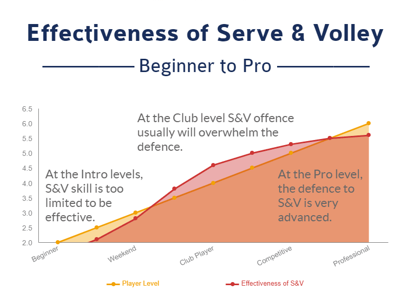
Your training in this forgotten technique can then carry the day before your less sophisticated opponents know what hit them! Outside of the very top levels, the S&V works beautifully and will be your secret weapon against whoever you play. In today’s age, it’s rare to find great serve and volley players. At the pro level, there may be reasons why this strategy has recently fallen out of fashion, but most of these reasons are far out of reach of 99% of your club opponents.
The serve and volley is the most underappreciated technique out there and if you can learn its secrets you’ll be putting points away while the baseline players scramble to adjust themselves to your game. Why not make this proven and effective lost art of tennis a part of your arsenal so you can gain the edge on your competition whether in singles or doubles?
Minimize Their Strengths And Maximize Yours
Most people are perennial baseline players, rarely venturing into the net unless they must. Very few people practice the serve and volley today. The typical baseline player has good groundstrokes (forehands and backhands), is consistent and usually has good to excellent endurance, so if you plan on fighting it out from the baseline, you better be just as good if not better to win the match.
And let’s not forget that if you are playing someone more experienced and/or younger than you, your chances of winning go down even further. So how can we tilt the odds in our favor for winning the match? I have four words for you: serve and volley tennis. The serve and volley happens when you serve the ball (either first serve or second serve) to your opponent and rush the net to pick off the return.
By doing so, you drastically reduce the length of the point and completely negate the endurance advantage of your opponent, since endurance plays a much smaller factor in short points over baseline points. Additionally, since you will be volleying from close to the net, you won’t need to move as much as you do in baseline rallies. Plus, volleys take less energy to hit (being short concise strokes) than groundstrokes from the baseline.
This will preserve your strength and force your opponent to play into your strength, which are your volleys. When you face a younger and faster opponent, they want nothing more than to wear you out from the baseline and cause you to hit an unforced error. Unfortunately for him or her, a surprise serve and volley attack will be their total undoing.
Not only will they not be able to use their strengths, but they’ll also be put on the defensive by your skilled volley attack, causing them to lose the confidence they had at the start of the match.
Steal Your Opponents Time With Serve And Volley
Time is everything in tennis. A split second makes all the difference. In order to hit a great forehand or backhand in tennis, you need the time to set up properly. If that time is cut down by even a half second, it can cause the player to hit into the net, out of the court or miss the ball entirely. This is what great volley players do to baseline players - even great ones. By volleying from close in to the net, your ball comes to the baseline player nearly twice as fast they normally see.
He or she has no choice but to rush into position to hit the next shot. Many times your opponent will end up hitting off-balance or on one leg without good weight transfer. This ends up in an error or a weak shot that can easily be put away by you at the net. And believe me, one of the best feelings in tennis is to end the point quickly and decisively at the net with a power volley or even a drop volley. It completely demoralizes your opponent.
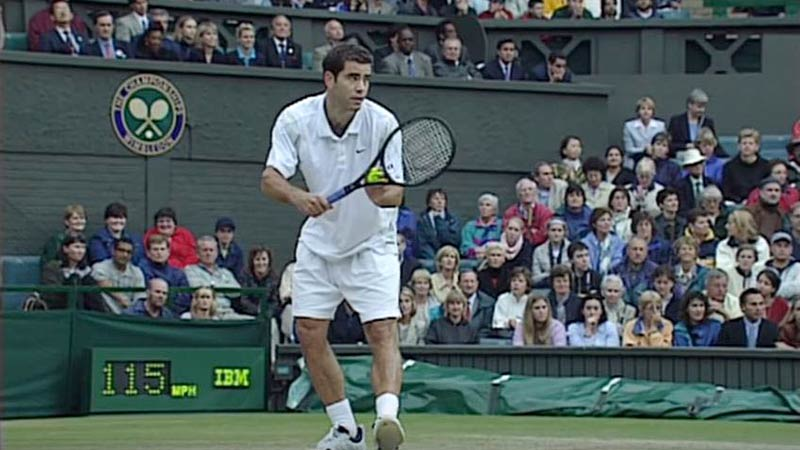
Just watch some of the great serve and volley tennis players of the past like Pete Sampras, Patrick Rafter and John McEnroe and you’ll see how they made their opponents scurry for the ball and feel completely rushed. If you are playing a great player, you may never have the ability to hit hard enough from the baseline to rush them. However, a solid, crisp volley directed to the corner of the court will instill panic in your opponent. Ultimately it steals their time away like a thief in the night.
Neutralize An Age And Talent Gap: Use The Volley.
One of the best ways to neutralize the age and talent difference in tennis is with the volley. In my personal experience, I’ve seen 65 and 70-year-old guys use the volley to beat much younger opponents. Not only that, but their longevity at the club level against much younger foes directly correlates to their ability to volley. However, anyone of any age can learn to serve and volley and use it to win at the club level and in tournaments.
Surprise Your Opponent With The Serve And Volley Game
The element of surprise is with you when you volley. First, your opponent can never sure when you are coming to net to volley. A surprise visit to the net when they least expect it can, and often does, result in an easy volley put away. By changing it up and coming into the net randomly, your opponent will never be sure when and if you are going to serve and volley.
Just when he or she gets comfortable returning your serve by thinking you will stay at the baseline, you sneak in for a volley and pick off an easy return. This is a great way to surprise your opponent. You may also try serving and volleying on a second serve, which will also surprise your opponent. Since few players ever rush the net on their second serve, it is a very underused tactic that can win you key points in a match.
And the difference between a few key points in a tennis match can often make the difference between winning and losing. In a totally different way, the serve and volley creates an element of surprise in that your opponent can never be sure where you are going to place the volley. Maybe you’ll hit a deep volley into the corner where your opponent least expects it. Or perhaps you might angle off a short volley, making it difficult for your opponent to set up a good shot on it.
Or if given the chance, you decide to hit a drop volley (volleying the ball very softly and close to the net). This often completely surprises your opponent, who can’t make it to the ball in time to even put a racquet on it. These serve and volley tactics totally work and I’ve used them in match play, and at the club level. Likewise, they’ve been used on me very effectively as well.
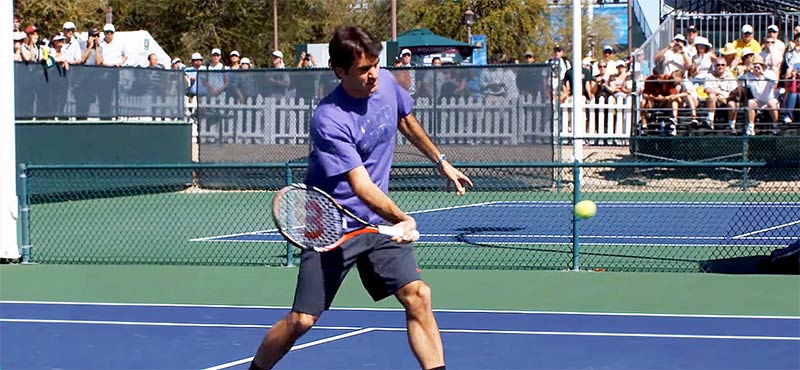
It’s always discouraging when someone wins the point by volley because there’s little you can do to get the ball back on a well-struck volley. When you rally from the baseline, you can hit anywhere, but your opponent has a general idea of where the ball is going by how you set up. He or she generally has a couple of seconds to move to the ball. But the volley can be a total surprise in terms of intended location.
This is mainly because the volley happens very quickly and is a short, concise stroke which is hard to read. Just watch the way a master volley player like Roger Federer handles the ball at the net. Often his opponents are totally caught off guard and can’t even hit back the shot because it’s so good.
Induce Panic: Rush The Net With Your Volleys
An uncomfortable opponent makes mistakes. By forcing your opponents out of their usual baseline rally game, you make them feel uncomfortable and cause them to panic. As they rush to get back your volleys, they feel more and more uncomfortable as the points pass by. Soon they realize that it’s an uphill battle facing you and your serve and volley game. Before long it’s quite possible they begin to mentally pack it in.
Personally, I’ve seen great serve and volley players absolutely demoralize great baseline players. It’s not long before the baseline players are scratching their heads, wondering how they are going to solve the riddle. Unfortunately for them, the end of the match comes before they even knew what hit ‘em! I’ve been on the other side of it as well.
What’s It Like To Face An Effective Serve And Volley Player?
I’ve played players with great serve and volley games and it almost feels unfair. I come to the court with a plan to overpower or outlast my opponent, maximizing my strengths, but am immediately forced into survival mode, desperately reacting as they drive the direction of the game. Their serves come in with pace, placement and spin. I return most of their serves but in the blink of an eye, they are at the net. In a panic, I run to cover the open court.
But a strong volley is hit way out of my reach and the point abruptly ends. This repeats itself the next point and then the one after that. Bam, they got me. The games are flying by and I feel like I can’t even make a dent in my opponent’s serve game. For those who don’t see it coming, this is what it feels like to be on the other side of it. Trust me, it will work great at the club level. Don’t underestimate the power of the serve and volley.
Make it a part of your arsenal and surprise your opponents with this lost art.